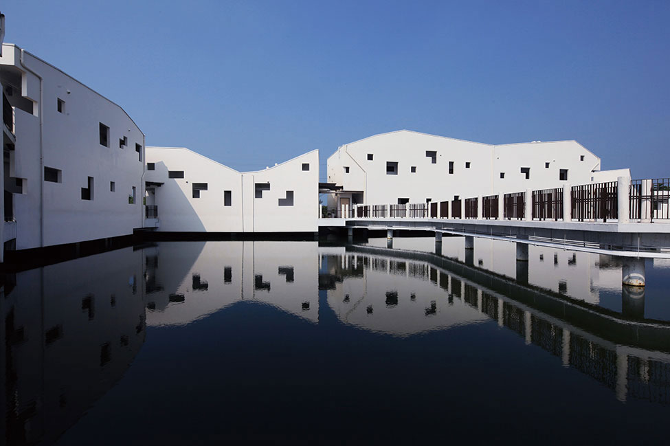

台江國家公園
Taijiang National Park
地址：台南市安南區四草大道118號
位於臺南市四草大道北側與鹽水溪間的四草魚塭區，於105年1月13日正式啟用，除保留既有地景地貌外，並透過「高腳屋」的構造形式，避免大規模地景破壞，園區內設置連通水路，串聯各自獨立漁塭，並銜接至鄰近嘉南大圳水系，形成自然感潮水體，以活絡水質，提供浮游生物、魚、蝦、貝類等生物優質棲息水域環境，是遊客近距離觀察魚塭生態系最佳場域。
此外，為了讓遊客深入瞭解台江歷史人文產業文化，其建築形式由「台江古地圖」發想「台江島」概念，並透過觀察台江既有聚落紋理與運用數位氣候模擬軟體，將其概念解構為具有埕、巷弄、大小不一及順應當地風向與日照的建築群，並保留既有雜木林等生態系，維護原有生物棲地，儼然成為兼具台江歷史人文生態產業特色之縮影場域。
更多介紹：